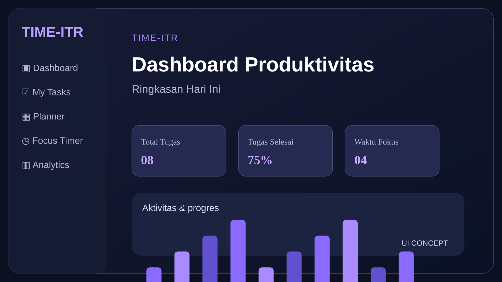
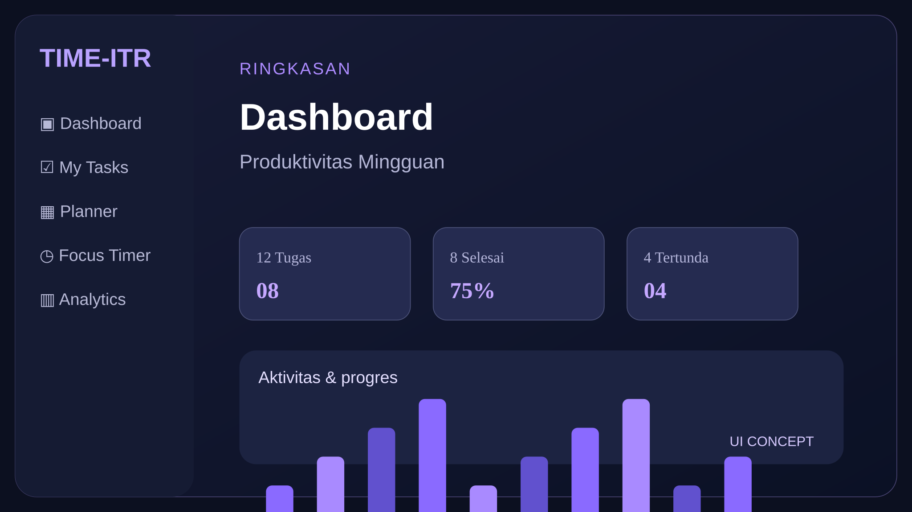
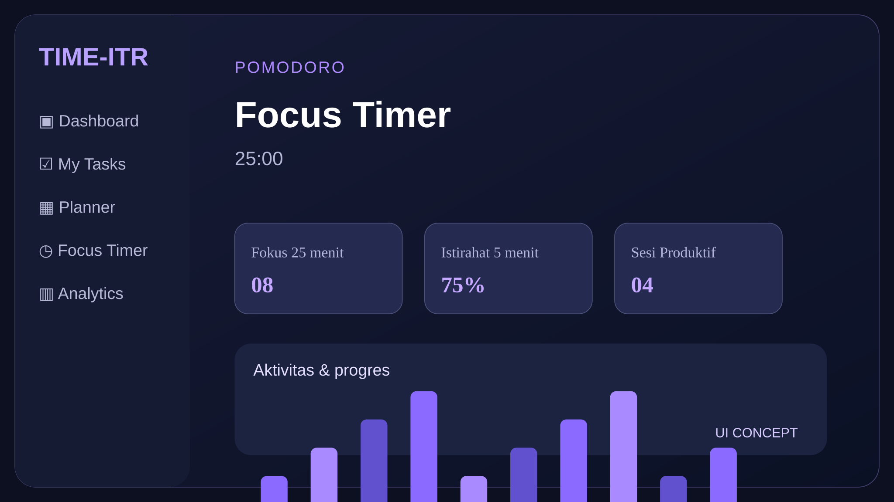

TIME-ITR
Atur waktu. Kelola tugas. Tingkatkan produktivitas.
Aplikasi manajemen waktu dengan dashboard, daftar tugas, perencana mingguan, timer fokus, dan analitik. Dibuat sebagai proyek portofolio berbasis front-end.

Ringkasan Project
TIME-ITR adalah aplikasi web untuk membantu pengguna mengelola aktivitas harian secara terstruktur. Melalui satu dashboard, pengguna dapat memantau tugas, merencanakan jadwal, menjalankan sesi fokus, serta melihat perkembangan produktivitas.
Proyek ini berfokus pada antarmuka yang nyaman digunakan, desain responsif, dan interaksi berbasis JavaScript. Data tugas disimpan di LocalStorage pada browser, sehingga tidak memerlukan backend untuk demonstrasi.
Informasi Project
Fitur Utama
Desain yang Fokus & Nyaman

Dashboard produktivitas
Ringkasan tugas dan aktivitas ditampilkan dalam kartu statistik yang mudah dipahami. Navigasi dibuat sederhana agar pengguna dapat berpindah antarfitur tanpa kehilangan fokus.
- Ringkasan tugas dan progres
- Perencana aktivitas mingguan
- Informasi yang tertata secara visual

Focus Timer & Dual Theme
Mode fokus membantu pengguna membagi waktu bekerja dan beristirahat. Dukungan tema terang dan gelap memberikan pengalaman yang konsisten di berbagai kondisi pencahayaan.
- Timer sesi fokus
- Dark & Light Mode
- Tampilan desktop dan mobile
Teknologi Digunakan
Galeri Project
Tantangan & Solusi
Tantangan
Merancang beberapa fitur produktivitas dalam satu antarmuka yang tetap mudah digunakan pada layar desktop maupun mobile.
Pendekatan Solusi
Menggunakan layout responsif Bootstrap, komponen UI konsisten, serta pengelolaan interaksi dengan JavaScript dan penyimpanan lokal.
Jelajahi TIME-ITR
Coba aplikasi secara langsung atau hubungi kontak yang tertera pada profil jika ingin lihat kode sumbernya.